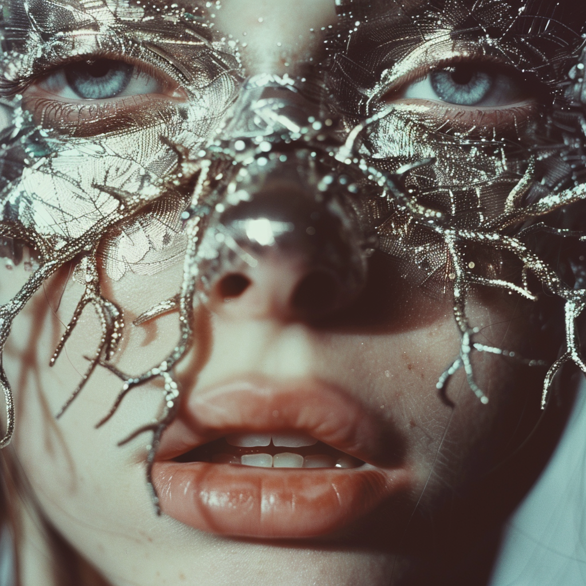

Sandrine Decordes est la PDG d'ArtCare, une agence pionnière dans le mariage de l'art et de la technologie, notamment à travers l'intelligence artificielle et la blockchain. Avec une perspective unique sur la créativité, elle déconstruit le mythe de l'artiste-né pour mettre en avant le travail acharné et les processus complexes qui sous-tendent la création artistique. Dans cet entretien exclusif, nous explorons avec elle la relation entre l'intelligence artificielle et la créativité dans le domaine de l'art numérique.
Quel est votre point de vue sur la créativité dans l'intelligence artificielle et l'art numérique ?
La créativité dans l'intelligence artificielle et l'art numérique est un sujet fascinant et complexe. Bien que les IA génératives soient capables de produire des œuvres d'art étonnamment belles et originales, elles ne possèdent pas les éléments humains essentiels tels que les émotions, la pensée divergente et la passion. En tant qu'humains, notre créativité est profondément liée à notre expérience, notre culture, nos émotions et nos interactions sociales. Les IA peuvent certes générer des œuvres sur la base de modèles et de données d'entraînement, mais elles manquent souvent de cette dimension humaine qui donne à l'art sa profondeur et son impact émotionnel.
Comment ArtCare intègre-t-il l'intelligence artificielle dans le processus de création artistique ?
Chez ArtCare, nous considérons l'intelligence artificielle comme un outil puissant qui peut enrichir et élargir les possibilités créatives plutôt que de les remplacer. Nous utilisons des algorithmes d'IA pour explorer de nouvelles formes d'expression artistique, pour repousser les limites de la création et pour susciter des expériences uniques. Par exemple, nous utilisons des réseaux neuronaux pour générer des compositions artistiques, mais nous intégrons également des éléments humains tels que l'expertise artistique et la sensibilité esthétique pour guider et affiner le processus. L'intelligence artificielle est un partenaire dans notre démarche créative, et non un substitut à la créativité humaine
Comment voyez-vous l'avenir de la créativité dans le domaine de l'art numérique et de la technologie ?
Je crois fermement que l'avenir de la créativité dans le domaine de l'art numérique et de la technologie est prometteur et excitant. Avec l'évolution rapide de l'intelligence artificielle, de la réalité virtuelle, de la réalité augmentée et de la blockchain, de nouvelles opportunités émergent constamment pour les artistes et les créateurs. Ces technologies nous permettent d'explorer des territoires inexplorés, de repousser les frontières de l'expression artistique et de créer des expériences immersives et participatives. L'avenir de la créativité réside dans la fusion harmonieuse de l'art et de la technologie, où l'innovation et l'émotion se rejoignent pour inspirer et émerveiller le public. ArtCare s'engage à être à la pointe de cette révolution créative, en explorant de nouvelles formes d'expression artistique et en créant des expériences uniques qui transcendent les frontières traditionnelles de l'art.
 Image generé par l'equipe d'ArtCare